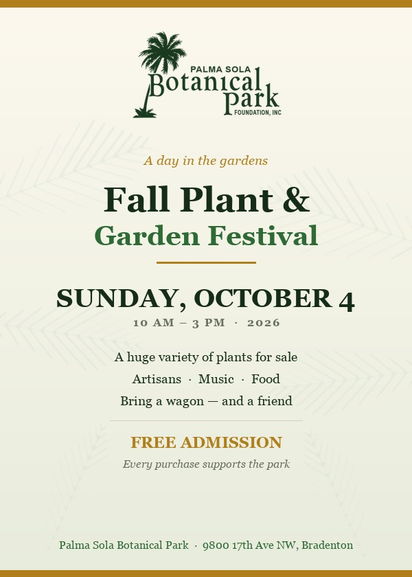
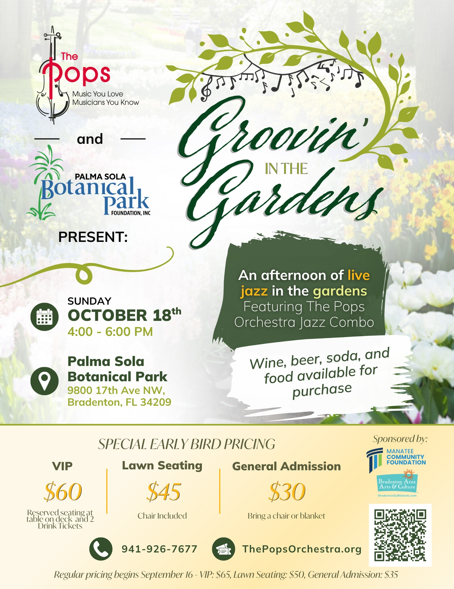
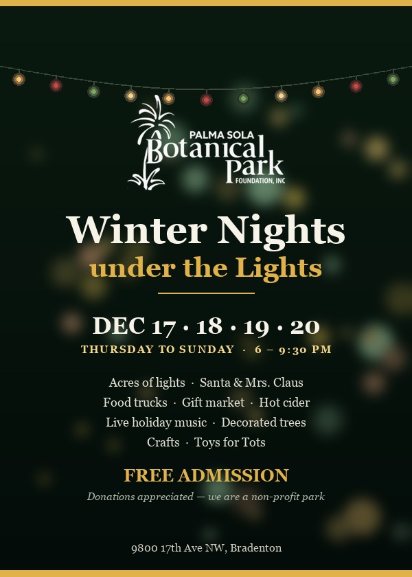

Sun 4 October · 10am–3pm
Fall Plant & Garden Festival
A huge variety of plants for sale, plus artisans, music and food.
See the flyer →On the shore of Palma Sola Bay — ten acres of gardens, a pond full of birds, and a community that has kept it free and open since 1993.
Three big days this season — and something most weeks in between.

A huge variety of plants for sale, plus artisans, music and food.
See the flyer →
An afternoon of live jazz with The Pops Orchestra Jazz Combo.
Tickets from $30 →
Acres of lights, Santa & Mrs. Claus, food trucks, hot cider and a gift market.
See the flyer →Ten acres, and six places worth walking to. Full descriptions on Visit.
You don't need a reservation, a tour or any botanical knowledge. Walk the paths at your own pace. The park closes occasionally for private events — worth checking the calendar before a weekend visit.
Directions, accessibility and what to expect →
What's blooming, what's fruiting, what's flying — and what somebody just planted.
Every species in the park has a page: what it is, where it stands, who photographed it and when. Point your phone at a sign and it opens.
Browse the collection →See something interesting? Photograph it and add the observation to the park's iNaturalist project. Naturalists around the world help put a name to it, and your photograph — with your credit on it — may end up on a sign, on this website, or on the screen in the Galleria.
How to get started →Palma Sola Botanical Park exists because local people decided a former county nursery was worth saving. It has run as a non-profit since 1993 with no federal, state or local government subsidy — volunteers do nearly everything else.
About the park →9800 17th Ave NW, Bradenton, Florida
Open 8am – dusk · Every day · Free